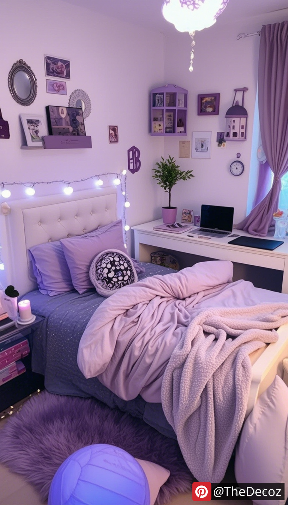
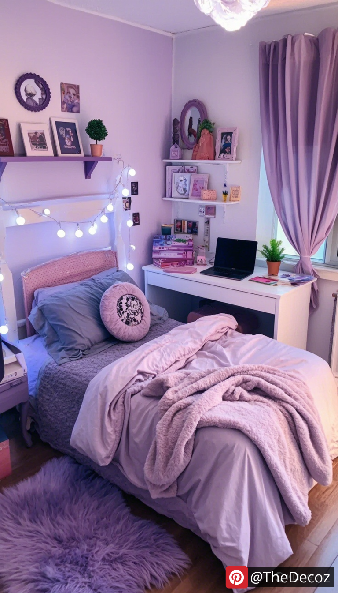

As teenagers transition into their own unique identities, their bedrooms often become a reflection of their personalities, interests, and aspirations. For teen girls, a bedroom is not just a place to sleep; it’s a sanctuary for creativity, relaxation, and self-expression. If you’re looking for room decor ideas that resonate with the vibrant spirit of teenage girls, you’ve come to the right place. Here are some innovative and inspiring decor ideas to help transform any bedroom into a stylish and functional space.
Choosing the right color palette is crucial in setting the mood of a bedroom. For teen girls, consider soft pastels like blush pink, mint green, or lavender for a calming effect. Alternatively, bold colors like teal, coral, or even a striking black and white theme can create a more dynamic atmosphere. Encourage your teen to select colors that resonate with her personality, and don’t shy away from mixing and matching shades for a more eclectic look.
Wall art is an excellent way to express individuality. Encourage your teen to create a gallery wall featuring her favorite quotes, photographs, and artwork. This can include framed prints, canvas art, or even DIY projects. Consider using removable wall decals for a temporary yet impactful change. This allows for easy updates as her tastes evolve over time.
Incorporating multifunctional furniture is essential for maximizing space in a teen girl’s bedroom. Look for beds with built-in storage drawers, desks that can double as vanity tables, or ottomans that open up for additional storage. This not only keeps the room organized but also provides a stylish solution to common clutter issues.
Textiles play a significant role in creating a warm and inviting atmosphere. Layering different fabrics can add depth and comfort to the room. Consider plush throw blankets, decorative pillows, and area rugs that complement the overall color scheme. A cozy reading nook with a bean bag chair or a hammock can also provide a perfect spot for relaxation and study.
Lighting can dramatically change the ambiance of a room. Encourage your teen to experiment with various lighting options, such as fairy lights, string lights, or LED strips. A stylish bedside lamp or a statement chandelier can also serve as a focal point. Dimmable lights can help create a cozy atmosphere for movie nights or study sessions.
Bringing elements of nature into the bedroom can enhance the overall aesthetic and promote a sense of tranquility. Consider adding indoor plants, such as succulents or snake plants, which are low-maintenance and add a pop of greenery. A nature-inspired theme can also be achieved through botanical prints, floral bedding, or natural wood accents.
Encourage your teen to showcase her hobbies and interests through decor. Whether it’s a collection of books, musical instruments, or art supplies, find creative ways to display these items. A dedicated shelf for books or a corkboard for displaying artwork can add a personal touch while keeping the room organized.
As academics become increasingly important, creating a dedicated study zone is essential. A well-organized desk with stylish stationery, a comfortable chair, and good lighting can make studying more enjoyable. Personalize the study area with motivational quotes or a vision board to inspire productivity.
Mirrors can make a room feel larger and brighter. Consider incorporating a large statement mirror or a series of smaller mirrors in creative shapes. Not only do they serve a practical purpose, but they can also enhance the overall decor and reflect light beautifully.
Teenagers’ tastes can change rapidly, so it’s important to keep the decor flexible. Opt for removable wallpaper, interchangeable bedding sets, and easily changeable decor items. This allows for quick updates without a complete overhaul, ensuring the room remains a true reflection of her evolving style.
Designing a bedroom for a teenage girl is an exciting opportunity to blend creativity with functionality. By incorporating these room decor ideas, you can help create a space that not only looks beautiful but also serves as a personal sanctuary for relaxation, study, and self-expression. Remember, the key is to encourage your teen to take the lead in the decorating process, ensuring that her bedroom truly reflects her unique personality and style. With the right decor, her bedroom can become a cherished retreat that inspires and nurtures her as she navigates the journey of adolescence.
 